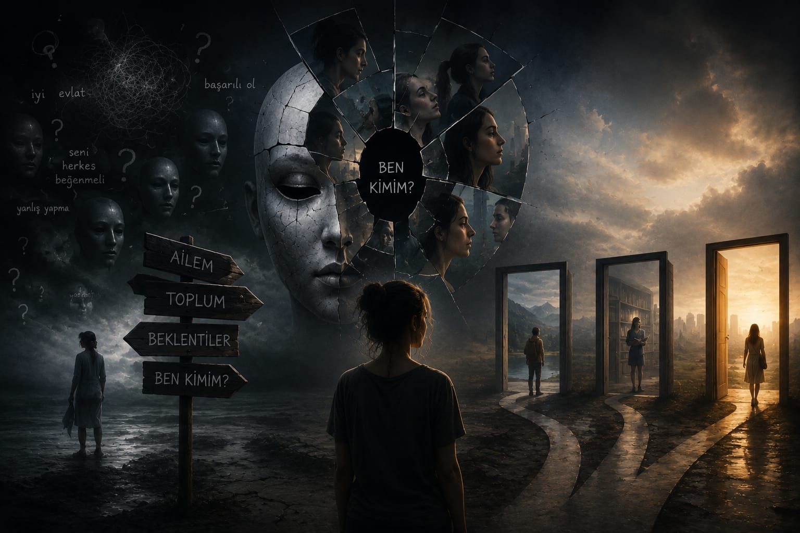

Kimlik Çatışması

Bir ortama girdiğinizde da yeni biriyle tanıştığınızda kendinizi nasıl tanıtıyorsunuz? Sadece kendi adınıza ve aile soyadınız ile değil mi? Peki bunu bir anlamı var mı
sizce? Yani mesela neden hepimizin kendisine ait bireysel bir soyadı yok? Evet,hepimizin benzersiz isimleri de yok doğru. Ancak genele baktığımızda isim ve
soyisim uyuşmaları aynı anda çok sık gözlenmez. Neden buna bu kadar takıldığımı merak ediyorsunuz haklı olarak. Üniversite yıllarımda bir arkadaşımla yaşadığım tartışma beni öylesine etkiledi ki
aklımda yıllarca kalacak soru işaretleri oluştu? Tartışma kısaca şöyleydi: Arkadaşım, bir bireyin saf şekilde anne ve babasının etkisinde olduğunu, onlar ne öğrettikleri
onu yaptığını ve eğer bir tercih yapılıyorsa bu tercihin alt yapısını da ailesinin ona aktardığını kendi bedeninde bireysellikten bağımsız taşıdığını iddia ediyordu.
Bireysel aktarımların da aileden geldiği, kişinin bütününü ailenin gerek genlerle gerekse ilk yaşlarda öğretilecek şekillendiği onun görüşüydü.
Ben ise farklı düşünüyordum. Özgürlük düşkünlüğü her şeyimi aileden alıp bireyselliğimi bile onların kurallarına göre oluşturmayı reddediyordu. Benim fikrimce
iki farklı gen DNA, haploit genlerin birleştirerek oluşturduğu diploit ben zaten başlı başına onlardan farklıydım. Annem sadece kendisine ait genleri taşırken ben o
genlerin babamınkilerle karışmış haline sahiptim. Ayrıca ailem beni bir yere kadar yetiştirebilirdi evet ancak devamında okula gitmemiz, parka gitmemiz, farklı anne
babaların yetiştirdiği yaşıtlarımızla etkileşimimiz onların elinde olan bir kontrol mekanizması değildi. Benim savunduğum şey bir dönemi ailemizin eseri olarak geçirsek de karakter şekillenmemiz kurduğumuz arkadaşlıklardan izlediğimiz filmlere
kadar her şeyden etkilenebilen bireysel bir karakterdi.
Bu tartışmanın üzerinden uzun zaman geçti. Günlük hayatın içinde birçok konu unutulup gidiyor ama bu soru zihnimde yaşamaya devam etti. Belki de bunun nedeni, cevabının yalnızca benim kim olduğumu değil, aslında hepimizin kim olduğunu ilgilendirmesiydi. Gerçekten de bizi biz yapan şey nedir? Dünyaya gelirken yanımızda getirdiklerimiz mi, yoksa yaşarken biriktirdiklerimiz mi?
Bu sorunun peşine düştüğümde, benden çok daha önce yaşamış insanların da aynı çıkmazın etrafında dolaştığını gördüm. Yüzyıllardır filozoflar, psikologlar ve bilim insanları insanın karakterinin nasıl oluştuğunu anlamaya çalışmıştı. Kimi insanın büyük ölçüde ailesinin bir eseri olduğunu savunurken, kimi ise insanın kendisini kendi seçimleriyle inşa ettiğini söylüyordu. İlginç olan ise, birbirine tamamen zıt görünen bu düşüncelerin aslında aynı sorunun farklı yönlerine ışık tutmasıydı.
Örneğin John Locke, insan zihnini doğduğunda boş bir levhaya benzetiyordu. Ona göre dünyaya kesin düşüncelerle ya da hazır bir karakterle gelmiyoruz. İlk öğrendiğimiz her şey, ailemiz ve yakın çevremiz tarafından bu boş levhanın üzerine yazılıyor. Konuşmayı, davranmayı, güvenmeyi, korkmayı, doğru ve yanlışı ayırt etmeyi önce onlardan öğreniyoruz. Bu bakımdan aile, yalnızca bizi büyüten insanlar değil; aynı zamanda karakterimizin ilk satırlarını yazan kişiler hâline geliyor.
Sigmund Freud ise bu etkinin sandığımızdan çok daha derin olduğunu düşünüyordu. Ona göre çocukluk yalnızca hatırladığımız birkaç güzel anıdan ibaret değildir. Hayatımızın ilk yıllarında yaşadığımız deneyimler, farkında olmasak bile bilinçdışımıza yerleşir ve yetişkin olduğumuzda verdiğimiz birçok kararı etkilemeye devam eder. Belki nedenini açıklayamadığımız bazı korkularımızın, kaygılarımızın ya da alışkanlıklarımızın kökeni bile çocukluğumuzda saklıdır.
Fransız sosyolog Pierre Bourdieu ise konuya biraz daha farklı bir açıdan yaklaştı. Ona göre ailemiz bize yalnızca ahlaki kuralları öğretmez; dünyayı nasıl göreceğimizi de öğretir. Neleri doğal kabul edeceğimiz, hangi meslekleri ulaşılabilir göreceğimiz, nasıl konuşacağımız, hangi davranışların bize "normal" geleceği büyük ölçüde içinde büyüdüğümüz çevre tarafından şekillenir. Çoğu zaman bunun farkına bile varmayız. Çünkü bize en doğal gelen davranışların önemli bir kısmı aslında öğrendiğimiz davranışlardır.
Ancak bütün düşünürler aynı fikirde değildi.
Aristoteles, insanın karakterinin yalnızca doğduğu ev tarafından belirlenemeyeceğini savunuyordu. Ona göre insanı asıl şekillendiren şey, tekrar ettiği davranışlardır. Cesaret, dürüstlük ya da merhamet gibi özellikler doğuştan sahip olduğumuz nitelikler değildir; onları her gün yeniden seçerek alışkanlığa dönüştürürüz. Başka bir deyişle, karakter yalnızca bize verilen değil, aynı zamanda inşa edilen bir yapıdır.
Jean-Paul Sartre ise bu düşünceyi çok daha ileriye taşıdı. Ona göre insanın özünü belirleyen şey geçmişi değil, seçimleridir. Elbette ailemiz, çocukluğumuz ve yaşadığımız olaylar bizi etkiler. Ancak bunların hiçbiri gelecekte kim olacağımızı kesin olarak belirlemez. İnsan, yaptığı seçimlerle kendisini her gün yeniden kurar. Bu yüzden geçmiş bazen ağır bir yük olabilir ama asla değiştirilemeyecek bir kader değildir.
Bu iki yaklaşım arasında bana en yakın gelen düşüncelerden biri ise Carl Gustav Jung'un yaklaşımı oldu. Jung, insanın ne yalnızca geçmişinden ibaret olduğunu ne de tamamen ondan bağımsız yaşayabileceğini söyler. Hepimiz ailemizden, kültürümüzden ve yaşadığımız deneyimlerden izler taşırız. Fakat aynı zamanda bu izleri anlamlandıran, değiştiren ve dönüştüren de yine biziz.
İlginç olan, günümüzde genetik alanında yapılan çalışmaların da buna benzer sonuçlar ortaya koymasıdır. Epigenetik üzerine yapılan araştırmalar, bize miras kalan genlerin tek başına kaderimizi belirlemediğini gösteriyor. Genler bize bir başlangıç noktası sunuyor; ancak yaşam boyunca karşılaştığımız insanlar, yaşadığımız olaylar ve içinde bulunduğumuz çevre bu mirasın nasıl ortaya çıkacağını etkileyebiliyor.
Belki de bütün bu farklı görüşlerin ortaklaştığı tek bir nokta var: İnsan ne yalnızca ailesidir ne de yalnızca kendi seçimleri. Hepimiz, bize verilenlerle kendi ellerimizle inşa ettiklerimizin birleşimiyiz. Ailemiz bize ilk adımı attırır; fakat yolun nereye varacağını attığımız sonraki adımlar belirler.
rir, aile mi yoksa kendi seçimleri mi?
Soyadımız, genetik mirasımız, çocuklukta öğrendiklerimiz… Hepsi bir yanımızda var olmaya devam ediyor. Ama aynı zamanda seçimlerimiz, arkadaşlıklarımız,
okuduğumuz kitaplar ve izlediğimiz filmler de bizi biz yapıyor. Belki de asıl mesele, bu ikisini çatıştırmak değil; aileden gelenlerle bireysel seçimlerimizi nasıl
birleştirdiğimiz. Çünkü karakter dediğimiz şey, yalnızca miras değil, aynı zamanda inşa edilmiş bir yolculuk.
Not: Bu yazıda yer alan düşünceler, adı geçen filozof ve bilim insanlarının temel yaklaşımlarından yararlanılarak yorumlanmıştır.
Kaynakça
- Aristoteles – Nikomakhos'a Etik
- Pierre Bourdieu – Pratik Nedenler (Practical Reason)
- Sigmund Freud – Haz İlkesinin Ötesinde
- Carl Gustav Jung – Anılar, Düşler, Düşünceler
- John Locke – İnsan Anlığı Üzerine Bir Deneme (An Essay Concerning Human Understanding)
- Jean-Paul Sartre – Varoluşçuluk Bir Hümanizmdir
- Robert Sapolsky – Determined: A Science of Life Without Free Will (Epigenetik ve çevrenin etkisi üzerine modern bilimsel değerlendirmeler için)
- National Human Genome Research Institute (NHGRI) – Epigenetics